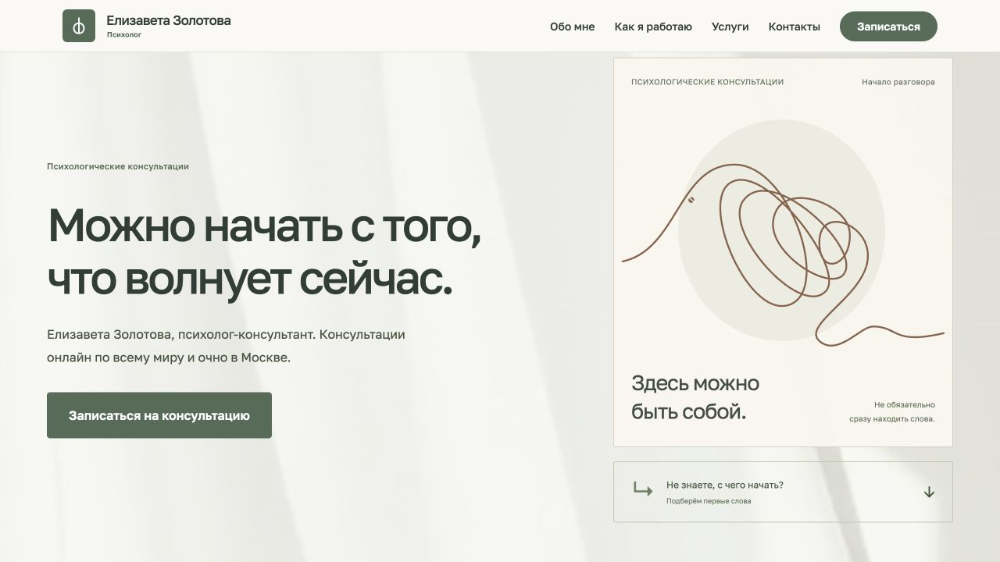
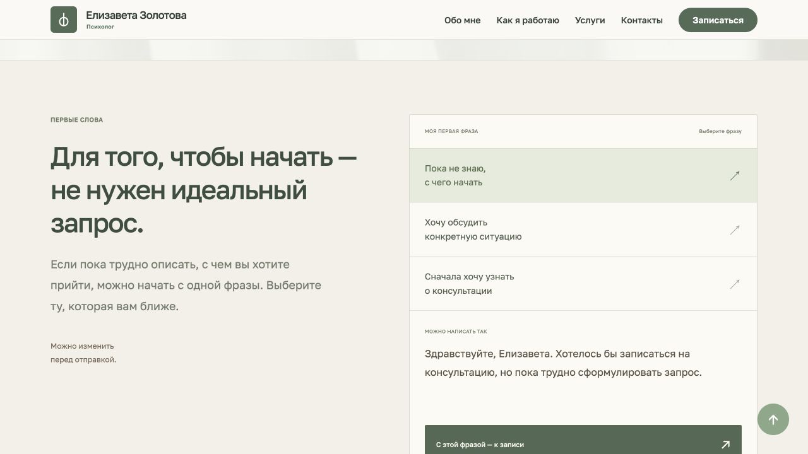
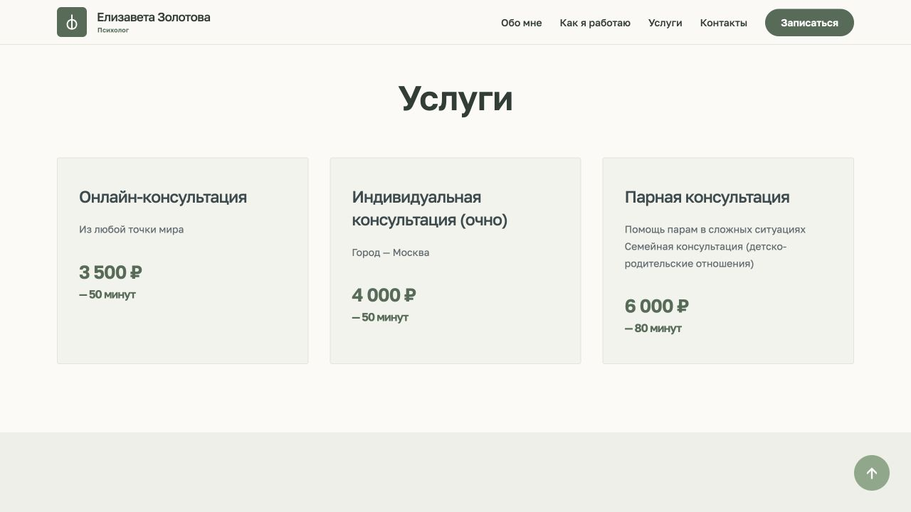
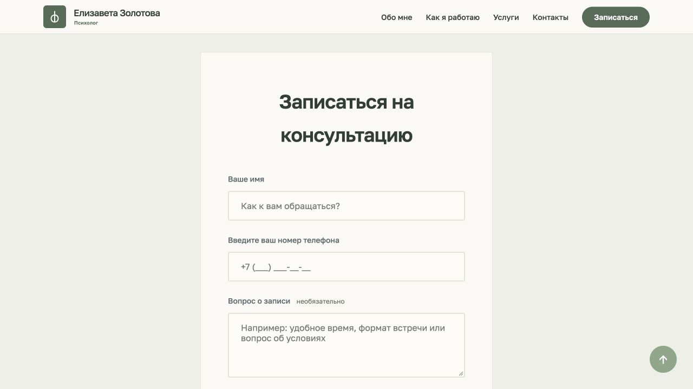

Клиентский проект / психолог
САЙТ
ПСИХОЛОГА;
Сайт психолога Елизаветы Золотовой.
Знакомство со специалистом, условия консультаций и запись в одном месте.

Задача
От знакомства
к обращению.
Представить специалиста, объяснить форматы встреч и стоимость. Дать посетителю возможность оставить заявку, даже если пока трудно сформулировать свой запрос.
Разработал структуру и оформление, адаптивную вёрстку, разделы об услугах, ответы на вопросы и форму записи. При разработке использовал AI-инструменты.
Ключевое решение / первые слова
Не обязательно
сразу знать, что написать.
Три варианта начала обращения. Выбранная фраза переносится в форму, где её можно изменить или удалить.

Реальный блок сайта: помощь в составлении обращения.
Попробуйте
Один выбор.
Начало сообщения.
Этот пример работает только на странице кейса и ничего не отправляет.
Текст никуда не отправляется.
Условия встреч
Форматы и стоимость
до записи.
Отдельные консультации и условия нескольких встреч. Дополнительные сведения раскрываются по желанию посетителя.

Форма обращения
Понятные поля.
Обратная связь.
Проверка обязательных полей, блокировка повторного нажатия во время отправки и сообщения об успехе или ошибке.

Подключение
Форма → n8n
→ Telegram.
Подключил форму к n8n через вебхук и настроил маршрут уведомлений в Telegram. Посетитель видит состояние отправки и получает сообщение об успехе или ошибке.
HTML / CSS / JavaScript / n8n
Что получилось
Информация о специалисте.
Понятный путь к записи.
Готовый сайт с форматами консультаций, стоимостью и формой обращения. Данных о влиянии сайта на количество записей пока нет.
Посмотреть сайт